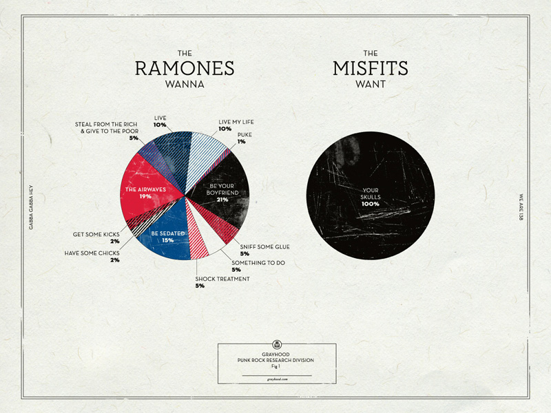
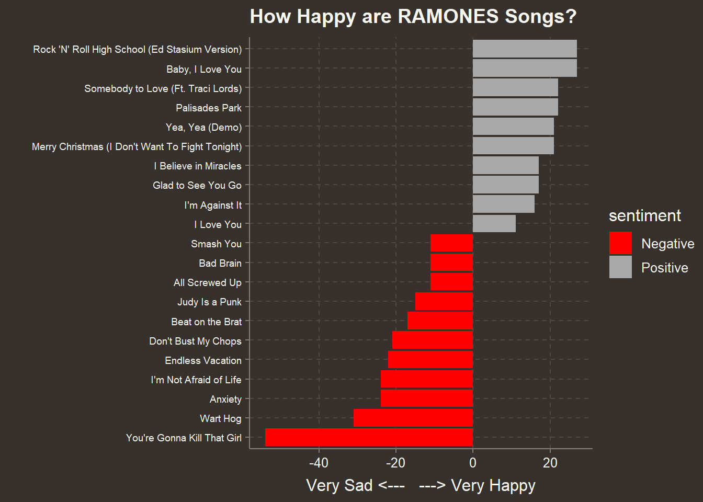
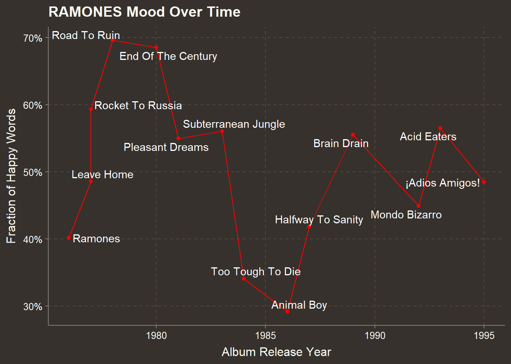
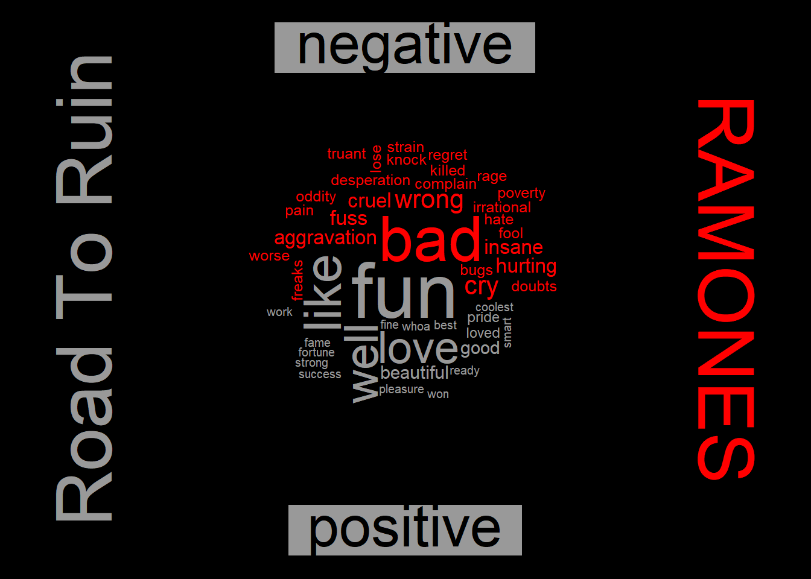
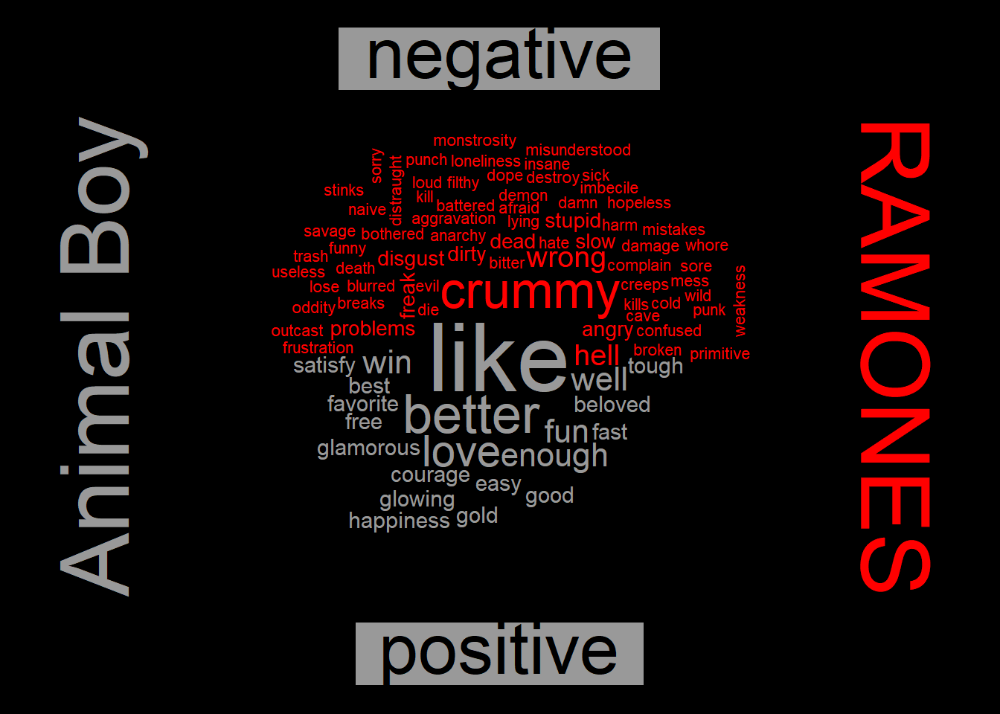
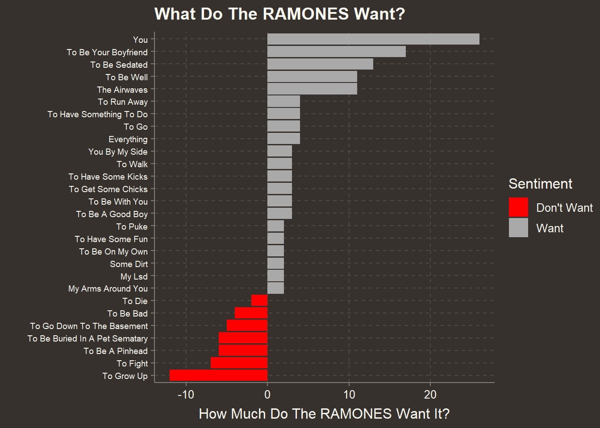
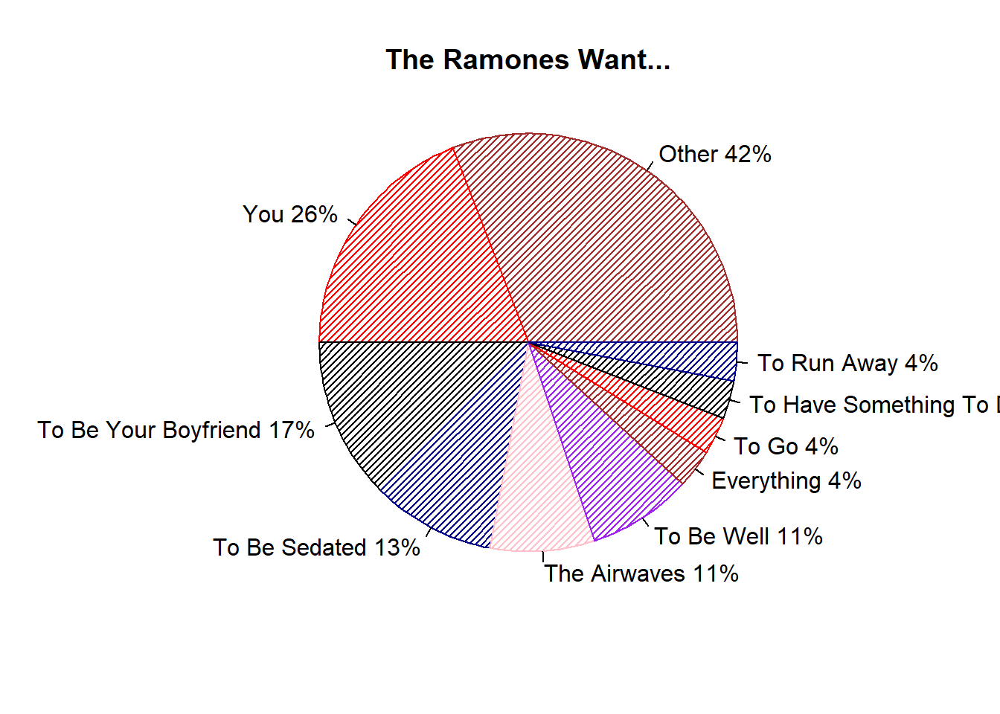
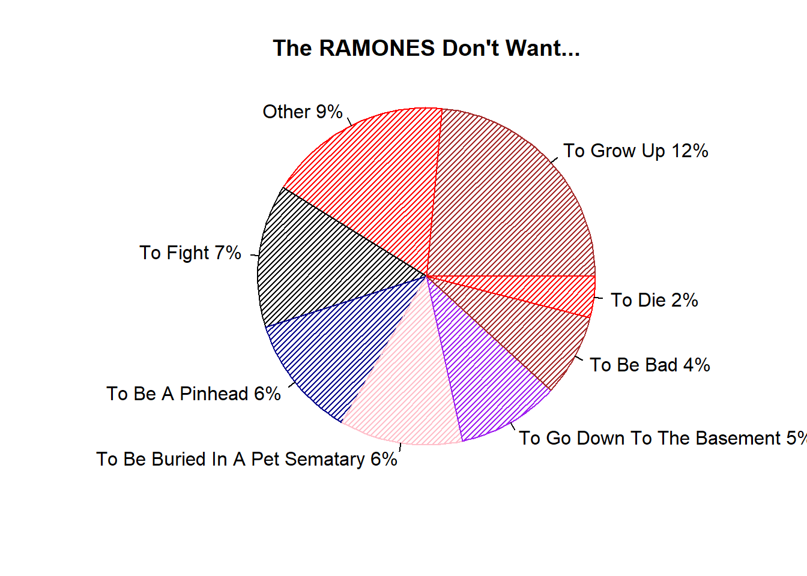

What Do The Ramones Want?
Recently I saw a tweet that shared this hilarious poster of Ramones “wants”.  Dan Gneiding (aka Grayhood) is the graphic designer who created this. You can buy it here
Very cool, but how accurate is it? I asked Dan and says he took some artistic license, as he should! You may accuse me of being that pedantic “Comic Book Guy” from “The Simpsons” but, when I saw it, I immediately wondered how I could tally these Ramones lyrics myself or, rather, get R to do it for me. The tidytext mining package makes short work of the project, as we’ll see.
Why the RAMONES?
The Ramones hold a special place in my heart. As a college student in central Ohio, in the late 70s, my frat brothers and I were huge fans. We were completely ridiculous of course. Preppy nerds bobbing to “Beat on the Brat” The Sigma Chis thought we were idiots (Lynrd Skynrd? Come on! History has judged). I never saw the Ramones at CBGBs but when we heard they were coming to a cowboy bar on notorious High St. across from Ohio State, we were thrilled. I blew off studying for a Poly-Sci mid-term the next day. I got my worst college grade ever but it was totally worth it. I said my future self would thank me and I was right!
Without any further adieu, hey, ho, let’s go!
Load Packages
First, load packages.
library(tidyverse)
library(tidytext)
library(rvest)
library(reshape2)
library(wordcloud)
library(scales)
library(genius)
library(ggthemr)
library(ggrepel)
ggthemr("earth",type="outer")Get Lyrics from Genius API
Have you ever spent an enormous amount of time on something, only to discover there was a much simpler way? Yes, yes you have. For this project we need a source of Ramones lyrics. Originally, I built a very finicky web scraping routine to get lyrics from a site I commonly use in my browser. I coaxed it to get all of the lyrics but I didn’t want to share it in this post because you would likely not be able to get it to work smoothly. Months passed then it occurred to me to Google “lyrics api” and, “viola!”, I found http://genius.com and the genius R package by Josiah Parry, available on CRAN. Access to the lyric API does require a free application access token. You can generate one here. I will leave installing the token called GENIUS_API_TOKEN into your R environment as an exercise for the reader. There are numerous tutorials on this subject around.
As always, we will be working in the tidyverse veracular. First we build a data frame of album names and the year of release. This gets fed into a single function genius::add_genius which returns all the lyrics. I’m embarressed to think about the tangled mess of web scraping code I was previously using.
As usual, we check to see if the file with all the downloaded data is already available so, as we iterate versions of our project, we don’t hit the API over and over.
#make sure you have a Genius API token
# my token is in the .Reviron file
# All the studio albums
ramones_albums <- tribble(
~album, ~year,
"Ramones", 1976,
"Leave Home", 1977,
"Rocket To Russia", 1977,
"Road To Ruin", 1978,
"End Of The Century", 1980,
"Pleasant Dreams", 1981,
"Subterranean Jungle", 1983,
"Too Tough To Die", 1984,
"Animal Boy", 1986,
"Halfway To Sanity",1987,
"Brain Drain",1989,
"Mondo Bizarro",1992,
"Acid Eaters",1993,
"¡Adios Amigos!",1995
)
artist_albums <- ramones_albums %>%
mutate(artist="Ramones") %>%
select(artist,album) %>%
{.}
if (file.exists("data/ramones_lyrics_genius.rdata")){
load("data/ramones_lyrics_genius.rdata")
} else {
ramones_lyrics_genius <- genius::add_genius(artist_albums,artist,album)
save(ramones_lyrics_genius,file="data/ramones_lyrics_genius.rdata")
}Put Lyics in Tidytext Form
Most projects require a huge amount of data wrangling before we can get any real analysis done. This project is pretty clean. We are already nearly good to go. Further, tidytext makes the remaining manipulation of the data soooo easy! To wit, let’s tokenize the data into individual words.
ramones_lyrics <- ramones_lyrics_genius
#make factor to keep albums in order of issue date
ramones_lyrics$album <- as_factor(ramones_lyrics$album)
ramones_albums$album <- as_factor(ramones_albums$album)
ramones_lyrics <- right_join(ramones_lyrics,ramones_albums,by="album")
lyric_words <- ramones_lyrics %>%
unnest_tokens(word,lyric) %>%
rename(song_name=track_title)See, I said it was easy.
How Needy Are The Ramones?
Out of 193 songs on all their studio albums, 16 mention wanting or not wanting in the title. “I Wanna” songs are a thing with the Ramones.
want_phrases <- "Wanna|Want"
ramones_lyrics %>%
select(album, track_title) %>%
distinct() %>%
filter(str_detect(track_title,want_phrases)) %>%
{.}## # A tibble: 16 x 2
## album track_title
## <fct> <chr>
## 1 Ramones I Wanna Be Your Boyfriend
## 2 Ramones Now I Wanna Sniff Some Glue
## 3 Ramones I Don't Wanna Go Down to the Basement
## 4 Ramones I Don't Wanna Walk Around with You
## 5 Leave Home Now I Wanna Be a Good Boy
## 6 Rocket To Russia Do You Wanna Dance?
## 7 Rocket To Russia I Wanna Be Well
## 8 Road To Ruin I Just Want To Have Something To Do
## 9 Road To Ruin I Wanted Everything
## 10 Road To Ruin I Don't Want You
## 11 Road To Ruin I Wanna Be Sedated
## 12 Road To Ruin I Want You Around (Ed Stasium Version)
## 13 Pleasant Dreams We Want the Airwaves
## 14 Halfway To Sanity I Wanna Live
## 15 Brain Drain Merry Christmas (I Don't Want To Fight Tonight)
## 16 ¡Adios Amigos! I Don't Want to Grow UpDo Some Sentiment Analysis
Before we look at the what the Ramones want we might as well run the, now routine, sentiment analysis you may have learned about from Julia Silge and David Robinson here. The Ramones are no Jane Austen but, hey, they have feelings, ya know? SAD NOTE: They “had” feelings. All the original four are dead.
To start our sentiment analysis let’s pull out stop words that don’t provide much context and label all the words in the “bing” sentiment database as either positive or negative.
lyric_words_cleaned <- lyric_words %>% anti_join(get_stopwords(),by="word")
#quick sentiment analysis
positive <- get_sentiments("bing") %>%
filter(sentiment == "positive")
negative <- get_sentiments("bing") %>%
filter(sentiment == "negative")
lyric_words_cleaned %>%
semi_join(positive,by="word") %>%
group_by(song_name) %>%
count(word) %>%
group_by(song_name) %>%
tally(sort = TRUE,name="Happy Words")## # A tibble: 162 x 2
## song_name `Happy Words`
## <chr> <int>
## 1 The Crusher 10
## 2 It's Gonna Be Alright 9
## 3 Palisades Park 9
## 4 Too Tough to Die 9
## 5 Censorshit 8
## 6 I Don't Want to Grow Up 8
## 7 In the Park 8
## 8 My Back Pages 8
## 9 Gimme Gimme Shock Treatment 7
## 10 Glad to See You Go 7
## # ... with 152 more rowslyric_words_cleaned %>%
semi_join(negative,by="word") %>%
group_by(song_name) %>%
count(word) %>%
group_by(song_name) %>%
tally(sort = TRUE,name="Sad Words")## # A tibble: 156 x 2
## song_name `Sad Words`
## <chr> <int>
## 1 I'm Not Afraid of Life 21
## 2 Endless Vacation 17
## 3 Don't Bust My Chops 16
## 4 Love Kills 15
## 5 Wart Hog 13
## 6 My Back Pages 12
## 7 Cretin Family 10
## 8 Something to Believe In 10
## 9 Anxiety 9
## 10 Howling at the Moon (Sha-La-La) 9
## # ... with 146 more rowsNow we change the sign of the count of negative words so we can get the net balance of happy vs. sad words.
lyric_words_cleaned %>%
inner_join(get_sentiments("bing"),by="word") %>%
group_by(song_name) %>%
count(sentiment,sort=TRUE) %>%
mutate(n = ifelse(sentiment == "negative", -n, n)) %>%
group_by(song_name) %>%
summarise(net_sentiment=sum(n)) %>%
filter(abs(net_sentiment) > 10) %>%
mutate(song_name = reorder(song_name, net_sentiment)) %>%
mutate(sentiment=ifelse(net_sentiment<0,"Negative","Positive")) %>%
ggplot(aes(song_name, net_sentiment, fill = sentiment)) +
geom_col() +
coord_flip() +
labs(title="How Happy are RAMONES Songs?",
y = "Very Sad <--- ---> Very Happy",
x= "") +
scale_fill_manual(values = c("red","darkgrey"))+
theme(axis.text.y = element_text(size=7,hjust=1)) 
Sentiment Over Time
The average sentiment over the whole lyric corpus is about evenly split between positive and negative words but if we look at sentiment by album we see a gyrating trend with an intersting dip in their middle years.
lyric_words_cleaned %>%
inner_join(get_sentiments("bing"),by="word") %>%
group_by(album, year) %>%
count(sentiment,sort=TRUE) %>%
arrange(album) %>%
pivot_wider(values_from = n,names_from = sentiment) %>%
mutate(fraction_happy = positive/(negative+positive)) %>%
ggplot(aes(year,fraction_happy)) + geom_line(color="red") + geom_point(color="red") +
labs(title = "RAMONES Mood Over Time",
y= "Fraction of Happy Words",
x= "Album Release Year") +
scale_y_continuous(labels = scales::percent_format(accuracy = 1)) +
geom_text_repel(aes(label=album),
color="white",
segment.color = "white")
We can generate word clouds for any album. Their “happiest” album is “Road to Ruin.”
{par(bg="black")
lyric_words_cleaned %>%
filter(album == "Road To Ruin") %>%
inner_join(get_sentiments("bing"),by="word") %>%
count(word, sentiment, sort = TRUE) %>%
acast(word ~ sentiment, value.var = "n", fill = 0) %>%
# comparison.cloud(colors = c("#F8766D", "#00BFC4"),
# max.words = 100)
comparison.cloud(colors = c("red", "grey60"),
max.words = 100,
title.bg.colors="grey60")
text(x=1.1,y=0.5,"RAMONES",col="red",cex=4,srt=270)
text(x=-0.1,y=0.5,"Road To Ruin",col="grey60",cex=4,srt=90)
}
… and their angriest, “Animal Boy.” You start to think there is something to this sentiment analysis stuff when you read the opening of this album’s review at http://allmusic.com:
Animal Boy wasn’t a very happy record for the Ramones. Since the release of Too Tough to Die (a slight return to form) nearly two years earlier, the band’s fortunes had gone from bad to worse; interest in the band kept dwindling with every release and the “bruthas” were constantly at each other’s throat.
{par(bg="black")
lyric_words_cleaned %>%
filter(album == "Animal Boy") %>%
inner_join(get_sentiments("bing"),by="word") %>%
count(word, sentiment, sort = TRUE) %>%
acast(word ~ sentiment, value.var = "n", fill = 0) %>%
# comparison.cloud(colors = c("#F8766D", "#00BFC4"),
# max.words = 100)
comparison.cloud(colors = c("red", "grey60"),
max.words = 100,
title.bg.colors="grey60")
text(x=1.1,y=0.5,"RAMONES",col="red",cex=4,srt=270)
text(x=-0.1,y=0.5,"Animal Boy",col="grey60",cex=4,srt=90)
}
What do the RAMONES want… and not want?
Now lets find what the Ramones Want. An n-gram is simply a cluster of words of length n. Let’s look at the most common n-grams, which would include the phrases like “I want” and “I wanna.”
Start with shortest n-gram that is a complete thought and work up to longer phrases. We take the the shortest phrase that makes sense unless appending more words doesn’t change the frequency. Then we take the longer phrase. For instance if “I wanna steal some money” and “I wanna steal from the rich” both exist we take “I wanna steal” since it would have a higher frequency than either longer phrase. In this case, the only phrase starting with “I wanna steal” is “I wanna steal from the rich” so we use that.
want_phrases <- "^(i wanna |i want |we want |we wanna |i wanted |i just want |i just wanna )"
get_ngrams <- function(lyrics,n,prefixes=""){
min_instance = 0
lyric_ngram <- lyrics %>%
unnest_tokens(ngram,lyric,token = "ngrams",n=n) %>%
group_by(ngram) %>%
filter(str_detect(ngram,prefixes)) %>%
count() %>%
arrange(desc(n)) %>%
filter(n>min_instance) %>%
mutate(want=str_remove(ngram,prefixes)) %>%
rowid_to_column()
return(lyric_ngram)
}
want <- ramones_lyrics %>% get_ngrams(5,want_phrases)
want## # A tibble: 43 x 4
## # Groups: ngram [43]
## rowid ngram n want
## <int> <chr> <int> <chr>
## 1 1 i want i want i 14 i want i
## 2 2 i want to be your 13 to be your
## 3 3 i just want to walk 7 to walk
## 4 4 i just want to have 6 to have
## 5 5 i just want to be 4 to be
## 6 6 i wanna be your boyfriend 4 be your boyfriend
## 7 7 i want to live my 4 to live my
## 8 8 i want to run away 4 to run away
## 9 9 i want to be a 3 to be a
## 10 10 i want you by my 3 you by my
## # ... with 33 more rowsWhat a human needs to do is decide which phrases are complete thoughts. We manually select the row numbers to build our ultimate table.
Remember what I said before about data wrangling? Well, sure, getting the words was easy. Determining meaningful phrases not (for a computer). If this was Spotify, our AI could figure these out, but this is not Spotify. This is an iterative process of manually inspecting tables of ever-longer n-grams and noting which rows have complete thoughts until we don’t see any sensible new phrases. We run through twice, first for “want” then “don’t want.” We flip the sign on the count of “don’t wants” to negative. I won’t bore you with every iteration so let’s skip ahead. Think of this as the cinematic training montage.
# WANT
# make "wanna" in to "want to" which also frequently appears so we get a good count.
ramones_lyrics <- ramones_lyrics %>% mutate(lyric=str_replace_all(lyric,"wanna","want to"))
do_want <- tibble()
all_wants <- tibble() # for debugging
# why make the code below a function, if we only call it once?
# Since we cumulatively modify all_wants each step is dependent on the prior one executing first
# this organizes the code into a block that tells future self to execute as a block
build_wants <- function(all_wants) {
want_phrases <- "^(i wanna |i want |we want |we wanna |i wanted |i just want |i just wanna )"
#select the 3-gram phrases that are complete thoughts using manual inspection
want <- ramones_lyrics %>% get_ngrams(3,want_phrases)
# visually inspect the want variable and select which lines to add to all_wants
# pause after each instance of get_ngrams to do this.
all_wants <- bind_rows(all_wants,want[c(2,8,11,13),])
# move to the 4-gram phrases, etc
want <- ramones_lyrics %>% get_ngrams(4,want_phrases)
all_wants <- bind_rows(all_wants,want[c(5,6,9,13,14,17,24,28,30,31,37),])
want <- ramones_lyrics %>% get_ngrams(5,want_phrases)
all_wants <- bind_rows(all_wants,want[c(3,4,6,9,21,22),])
want <- ramones_lyrics %>% get_ngrams(6,want_phrases)
all_wants <- bind_rows(all_wants,want[c(1,11,12,22,25,28),])
want <- ramones_lyrics %>% get_ngrams(7,want_phrases)
all_wants <- bind_rows(all_wants,want[c(5,6,7,9,10,12,21),])
want <- ramones_lyrics %>% get_ngrams(8,want_phrases)
all_wants <- bind_rows(all_wants,want[c(7,3),])
return (all_wants)
}
do_want <- build_wants(do_want)
do_want <- do_want %>%
mutate(want=str_to_title(want)) %>%
group_by(want) %>%
summarise(n=sum(n)) %>%
arrange(desc(n))
# DONT'T WANT
dont_want <- tibble()
all_wants <- tibble() # for debugging only
ramones_lyrics <- ramones_lyrics %>% mutate(lyric=str_replace_all(lyric,"wanna","want to"))
want_phrases <- "^(i don't want |we don't want |i didn't want )"
build_dont_wants <- function(all_wants) {
want <- ramones_lyrics %>% get_ngrams(4,want_phrases)
all_wants <- bind_rows(all_wants,want[c(2),])
want <- ramones_lyrics %>% get_ngrams(5,want_phrases)
all_wants <- bind_rows(all_wants,want[c(3,5,6,7,9,11,15),])
want <- ramones_lyrics %>% get_ngrams(6,want_phrases)
all_wants <- bind_rows(all_wants,want[c(1,7),])
want <- ramones_lyrics %>% get_ngrams(7,want_phrases)
all_wants <- bind_rows(all_wants,want[c(2,17),])
want <- ramones_lyrics %>% get_ngrams(8,want_phrases)
all_wants <- bind_rows(all_wants,want[c(7,8,9,16),])
want <- ramones_lyrics %>% get_ngrams(9,want_phrases)
all_wants <- bind_rows(all_wants,want[c(3,10,12),])
want <- ramones_lyrics %>% get_ngrams(10,want_phrases)
#there it is - Pet Sematary!
all_wants <- bind_rows(all_wants,want[c(1),])
}
dont_want <- build_dont_wants(dont_want)
dont_want <- dont_want %>%
mutate(n = -n) %>%
mutate(want=str_to_title(want)) %>%
group_by(want) %>%
summarise(n=sum(n)) %>%
arrange(n)Finally we put it all together to get what we’re after.
ultimate_want <- bind_rows(do_want,dont_want) %>%
group_by(want) %>%
summarise(n=sum(n)) %>%
mutate(Sentiment = ifelse(n > 0,"Want","Don't Want")) %>%
arrange(n) %>%
{.}
p <- ultimate_want %>% mutate(want=reorder(want,n)) %>%
filter(abs(n) > 1) %>%
ggplot(aes(want,n,fill=Sentiment)) + geom_col()+coord_flip()+
labs(title="What Do The RAMONES Want?",
y="How Much Do The RAMONES Want It?",
x="")
p +
scale_fill_manual(values = c("red","darkgrey"))+
theme(axis.text.y = element_text(size=7,hjust=1)) 
Bringing It Full Circle
Sometimes, late at night, after everyone else is asleep, I hide under the covers, open my laptop and look at… pie charts. Ed Tufte says I will go blind if I keep doing it. Still, for the sake of bringing this full circle (ahem) back to the chart that inspired it, let’s make a version of Grayhood’s poster with our data. So it’s not a complete mess, we lump any phrases that occur less than 4 times in “Other.” That takes some of the fun out of things since we lose memorable phrases like “I wanna sniff some glue” which the poster above includes. This is data science, not art. It’s not supposed to be fun! While I use ggplot2 pretty much exclusively, the base R pie plot produces pretty clean results that approximate the style of the poster with no embellishment.
collapsed_want <- ultimate_want %>%
filter(Sentiment=="Want") %>%
mutate(want = ifelse(n<4,"Other",want)) %>%
group_by(want) %>%
summarise(n=sum(n)) %>%
arrange(desc(n)) %>%
{.}
with(collapsed_want,
pie(n,
labels=paste0(as.character(want), " ", n, "%"),
col=c("brown","red","black","darkblue","pink","purple"),
radius=1,
density=30,
bg="sienna",
main="The Ramones Want..."))
collapsed_want <- ultimate_want %>%
filter(Sentiment=="Don't Want") %>%
mutate(n = -n) %>%
mutate(want = ifelse(n<2,"Other",want)) %>%
group_by(want) %>%
summarise(n=sum(n)) %>%
arrange(desc(n)) %>%
{.}
with(collapsed_want,
pie(n,
labels=paste0(as.character(want), " ", n, "%"),
col=c("brown","red","black","darkblue","pink","purple"),
radius=1,
density=30,
bg="sienna",
main="The RAMONES Don't Want..."))
It must be comforting to know the Ramones want you more than anything but they aren’t going down to the basement with you. Okay, so maybe this was a little fun. Thanks for reading!